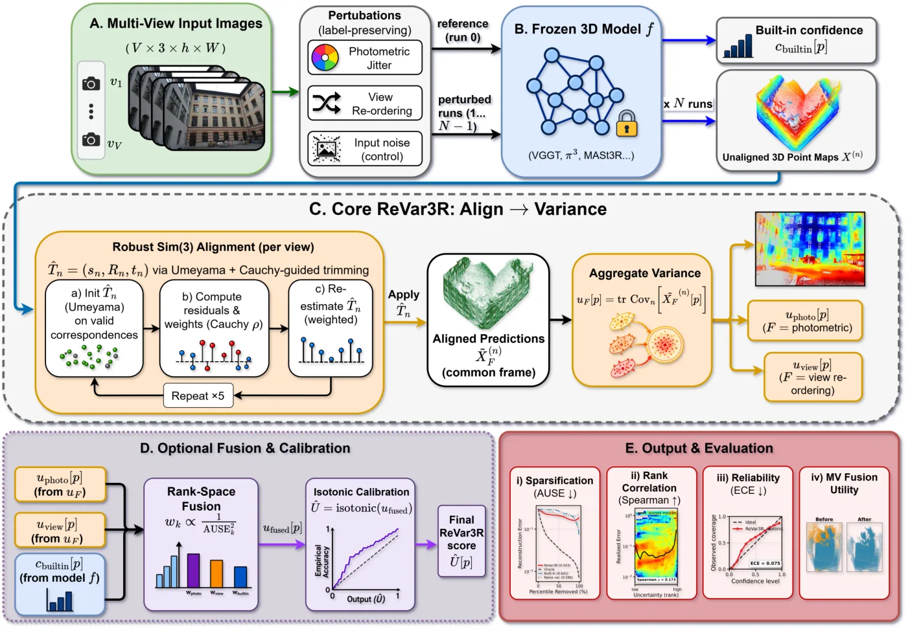
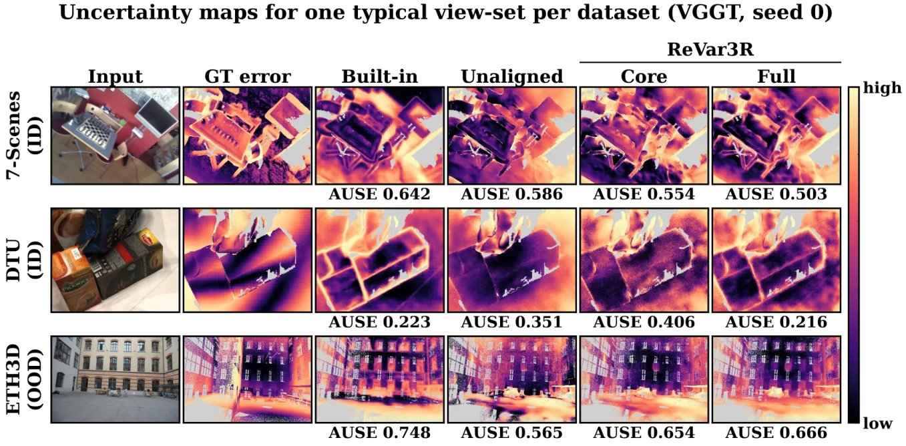
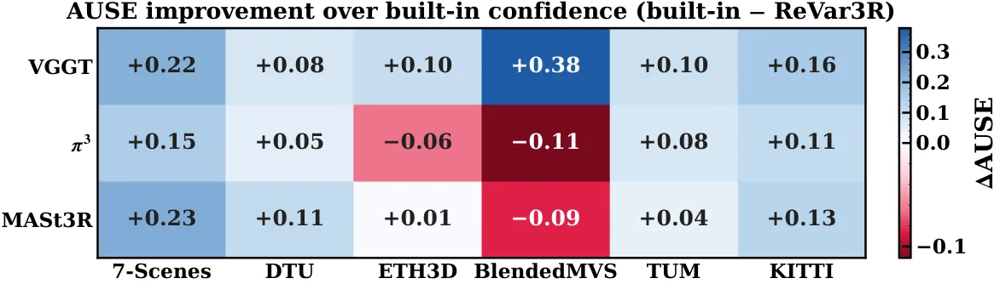
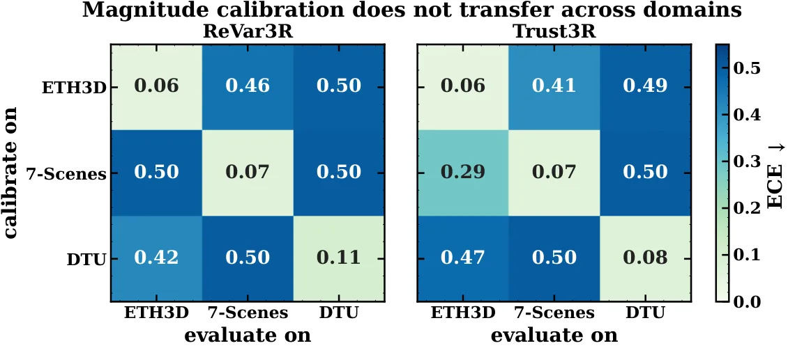

ReVar3R：面向前馈 3D 重建的规范感知扰动不确定性
Revar3r: gauge-aware perturbation uncertainty for feed-forward 3d reconstruction
指出点图的相似变换规范（gauge）会给扰动方差引入一个与误差无关、随 ‖x_p‖² 增长的混淆项；提出“先对齐再求方差”（稳健 Sim(3) 配准 + 逐点协方差迹），在 VGGT/π³/MASt3R 六个数据集上 15/18 条件优于内置置信度，点过滤在 50% 剔除时可弥补 30–57% 的 oracle 差距。
win vs built-in
Spearman
AUSE
oracle gap closed
作者、单位与技术谱系 · Research context
作者与单位
研究脉络
- DUSt3R / MASt3R / VGGT / π³（Wang et al. 2024; Leroy et al. 2024; Wang et al. 2025a; Wang et al. 2026）方法基座关系：直接以前馈点图回归骨干为被评估的冻结模型，其无固定坐标系的输出正是规范混淆的来源。[论文 §1、§2]
- Umeyama（1991）相似配准 / Baarda（1981）自由网平差 / Kanatani & Morris（2001）规范变换方法上游关系：“先移除规范再解释协方差”的原理来自测量平差与几何不确定性理论，本文把它搬到冻结输出侧。[论文 §2 与参考文献]
- Ilg et al.（2018）AUSE / Poggi et al.（2020）深度扰动不确定性方法上游关系：扰动式免训练不确定性与 AUSE 排序评测是本文的直接方法学来源。[论文 §2、§5]
- Trust3R（Zhu et al., 2026）对比基线/上游关系：最接近的竞争方法是训练型证据头，本文将其作为取舍而非要击败的基线。[论文 §2.3、§6.5]
合作网络
- BRAC University ↔ Mahidol University 跨机构共同署名BRAC University（Mahdi、Salim、Rabbani） → Mahidol University（Aniqua Nusrat Zereen）关系：共同署名[arXiv 首页署名]
- BRAC University 内部同单位署名Sammam Mahdi → Fariha Binta Salim关系：共同署名（同单位）[arXiv 首页署名]
- 对 VGGT/π³/MASt3R 与 Trust3R 的公开技术依赖ReVar3R → VGGT、π³、MASt3R、Trust3R 释放的 checkpoint关系：明确技术依赖（非共同署名）[论文 §5、§6.5]
作者与单位来自论文首页署名（含通讯作者标注）；谱系依据正文引用标注为“基于来源的解读”。合作边仅记录共同署名与公开技术依赖，未发现与 Trust3R/VGGT 作者群的公开共同署名边，故不推断导师或师生关系。论文含 AI 使用声明：LLM 仅用于在作者监督下起草与润色文字，事实与结果由作者负责。
方法本质拆解 · What actually changed
是不是微调？
完全不是训练。三个骨干 VGGT、π³、MASt3R 均使用公开冻结 checkpoint，论文不做任何重训或权重修改；ReVar3R 只增加推理侧的“对齐—求方差”步骤。可选的标定与融合确实用到一个小留出带标签划分，但它们只标定/合并已有信号的排序权重，不改变任何单族信号的排序，也不训练网络参数。因此这是一个纯输出侧、免训练的不确定性估计器。
有没有额外约束？
新增约束作用于“如何解释跨 run 的方差”：对齐阶段假定并估计一个全局 Sim(3) 变换 T̂_n=(s_n,R_n,t_n)，把每个扰动 run 配准到参考帧，再对逐点样本协方差取迹；稳健配准用 Cauchy M 估计器尺度与每轮剔除最差 10% 的顺序约束、固定种子最多 8000 对应点。它不引入新的损失、不改变输入接口，也不修改模型内部变量；约束只作用在输出点图的坐标系与由此得到的方差分数上。
推理/后端到底做了什么？
推理在冻结模型上跑两个扰动族各 N=5 次（视角重排 + 光度抖动 ±25% 与约 0.5% 噪声），共享参考预测，共 9 次前向；随后对每个视图做稳健 Sim(3) 配准（Umeyama 初始化 + 5 轮 Cauchy 修剪）、计算逐点协方差迹作为分数，可选再做 isotonic 标定与 inverse-AUSE² 秩空间融合。没有编码器/解码器改动、没有全局 BA 或因子图后端，代价是多次前向带来约 10× 时延。
方法本质是什么？
本质是：点图的输出只在相似变换意义下唯一，因此跨 run 方差里混入了一个与误差无关的规范项；把这个规范项在求方差前先移除（对齐），方差才重新对齐到几何误差。它改变的是“不确定性分数对坐标自由度的敏感度”，靠稳健配准把分散在不同规范里的等价预测收敛到同一帧，再把残留散布当作信号。没有训练新的头，也没有引入新的几何后端——只把经典“先规范化再解释协方差”的原理搬到冻结网络的输出侧。
输入为冻结点图模型对扰动输入的多次预测；改变的位置是在求方差前对每个 run 做稳健 Sim(3) 配准（对齐替代直接方差）；合并动作是取对齐后逐点协方差迹并可选用留出做标定/秩融合；直接效果是把与误差无关的规范混淆项移除，在 15/18 条件下把 AUSE 降到内置置信度以下。

动机与问题Motivation
动机与问题
前馈 3D 基础模型（DUSt3R、MASt3R、VGGT、π³）一步回归逐像素 3D 点图，但其输出没有固定坐标系，因此同一面墙被正确重建两次，也会因输出坐标系间的微小旋转而在逐点方差上显得“不可靠”。论文要回答的问题是：在只能访问冻结模型输出的前提下，如何把扰动集合的不确定性变成真正与几何误差相关的排序？内置置信度是联合训练出来的、并未针对几何误差标定，实测与误差的相关性弱、在分布平移下更弱；而训练型证据头（如 Trust3R）需要带标签 3D 数据和树模型专属的适配。作者由此把问题定义为：如何在输出侧、免训练地剥离规范混淆项。
方法Method
方法总览
ReVar3R 的流程分三段：对齐、聚合、（可选）标定与融合。对齐上，对同一视图的 N 个扰动预测选 run 0 为参考，用稳健相似变换 T̂_n∈Sim(3) 把其余 run 映射进参考帧；聚合上，取对齐后预测的逐点样本协方差的迹 u[p]=tr Cov_n[X̃⁽ⁿ⁾[p]]，作为不确定性分数。可选组件包括：用留出划分做 isotonic 标定以改善 ECE（期望标定误差），以及按留出划分的 inverse-AUSE² 权重做秩空间融合（把光度抖动、视角重排与内置置信度合成一个分数），使弱信号被降权而非拖累估计。论文强调对齐是概念性贡献，聚合/标定/融合都是标准操作。
关键技术细节
稳健配准以 Umeyama 闭式相似拟合初始化，再用 Cauchy M 估计器尺度下的 5 轮稳健修剪精化：每轮按 Cauchy 权重排序对应点、丢弃最差 10%、在剩余点上重算闭式拟合；权重只决定剔除顺序，不作为连续权重进入拟合，以避免被检测的高误差区域把规范估计拉向自己而“自我抵消”。每个 run 相对参考只估计一个 T̂_n，用全部有限、预测有效的对应点（不加置信阈值或人工掩码）；由于 7 个参数远小于视图点数，拟合用固定随机种子、最多 8000 个对应点的子样本，再应用到全部点。默认协议为两个扰动族各 N=5 次推理——随机视角重排，以及亮度/对比度/颜色各 ±25% 加约 0.5% 加性像素噪声——两族共享参考预测，故共需 9 次模型评估。评测的 AUSE 与仿真验证使用的是真实数据上的同一套估计器代码。

实验Experiments
实验设置
骨干为三个冻结的公开 checkpoint：VGGT、π³（对输入视图置换等变）与 MASt3R（VGGT/MASt3R 依赖参考视图）。六个数据集覆盖互补情形：7-Scenes 与 DTU 为分布内，ETH3D 为宽基线室外分布平移，BlendedMVS 与基础模型训练语料重叠（此时内置置信度已很强），另加竞争方法的自有基准 TUM（室内 RGB-D）与 KITTI（室外驾驶、稀疏 LiDAR 真值）。每个条件由重叠的 V=5 视图组构成，含逐像素真值点图，真值被缩放到模型输出分辨率。主指标为 AUSE（越小越好，按场景归一化后与 oracle 误差排序比较），辅以 Spearman 相关、AURG 与回归 ECE；逐点误差用稳健相似对齐后的欧氏距离，评测对齐与估计器内部 run-to-run 配准相互独立。统计以视图组为推断单元，成对 Wilcoxon 检验；随机估计器跑 5 个随机种子取均值。
实验数字与比较
受控仿真（§6.1）：随注入的 Sim(3) 规范增大，未对齐方差的排序从 Spearman 0.99 退化到 0.40、AUSE 从 0.007 升到 0.47；而对齐后方差始终保持在 oracle 质量（Spearman≈0.99、AUSE≈0.008）。真实模型复现该签名：全部 30/30 个 VGGT 视图组都出现 U_unaligned−U_aligned 随 ‖x_p‖² 增长（中位 Spearman +0.59），对式(3) 的直接拟合在 16/18 条件下得到正规范系数、中位 R²=0.74（§6.1）。内置置信度对比（§6.3）：同一估计器在三个骨干×六个数据集上于 15/18 条件降低 AUSE；增益最大处是内置信号最弱处——VGGT 在 7-Scenes 0.712→0.491（−31%）、MASt3R 在 7-Scenes 0.587→0.358（−39%）、VGGT 在 KITTI 0.401→0.237（−41%）。分布平移（§6.4）：室外 KITTI 上 ReVar3R 排序最优（Spearman +0.69，内置 +0.48、训练头 +0.44；AUSE 0.216 vs 内置 0.359），而 ETH3D 为失败项（内置 Spearman +0.31/AUSE 0.585 优于本方法 +0.13/0.667）。对齐的分阶段收益（§6.2）：场景级规范移除把平均 AUSE 从 0.543 降到 0.446（占总增益 0.151 的 65%），逐视图变换再降到 0.392。
消融/失败边界
对齐组消融（附录 C.1）显示 AUSE 随对齐自由度递增而单调下降：不对齐 0.543、仅平移 0.500、刚体 SE(3) 0.460、相似 Sim(3) 0.392，说明最大的两步正是补上旋转与尺度、移除 (σ_s²+2σ_r²)‖x‖² 混淆项；参考选择消融给出固定 run-0、medoid、随机参考的 AUSE 几乎一致（0.392/0.395/0.394），即不需要特权锚点。监督阶梯揭示了标签的作用：无标签核心 11/18、无标签等权融合 12/18、留出权重 14/18、纳入内置信号 15/18，核心贡献了主要效果，复用基线只多赢 1 个条件；五种种子重复整张网格每次都得到 15/18。失败边界明确：ETH3D 宽基线（24 视图组、9 场景）是损失项；BlendedMVS 与 π³ 在 ETH3D 上的三个例外是内置置信度本就强的格子。方法测的是“不稳定性”而非“不正确性”——当多个扰动在同一错误几何上达成一致时，稳定系统性偏差方差很低、无法被检测，训练头亦有同样局限。其余边界：幅值标定依赖标签且跨域迁移差；不确定性引导的初始化在固定预算下不改善新视角合成；多次推理带来约一个数量级的时延增量。
局限与迁移Limitations & Transfer
局限与待核验
作者明确承认的四点局限：其一，ReVar3R 度量的是不稳定性而非不正确性，稳定的系统性偏差在扰动一致时方差很低；其二，幅值标定需要标签、且对两种方法都跨域迁移差（论文建议用同分布可交换标定集走 conformal 预测获得有限样本边际覆盖保证）；其三，不确定性引导的初始化在固定预算下不能改善新视角合成；其四，多趟推理带来约 10× 时延，且分析对估计出的规范做了理想化（附录 E.1）。我们待核验项：(a) 论文报告所有数字来自作者自有评测代码，缺少第三方对 30/30 与 15/18 的独立复现；(b) 与 Trust3R 的对比只在 224px、MASt3R 上匹配分辨率，其他骨干上的头对头比较待补；(c) “相机中心不确定性也有 ‖c‖² 膨胀”（附录 B.1）的跨模态提法需在更宽视角协议下复核。
与你研究路线的关系
可迁移模块有三处：第一，把“未观测对称性（规范自由度）会污染协方差”的原则显式化——这与自由网平差（Baarda）、BA 中的规范固定、SE(3)/Sim(3) 坐标系约定是同一原理，可直接用于你融合/PPP 后端里对状态协方差的可解释性处理：在统计学“散布”前先做一次稳健的规范归一/对齐。第二，稳健 Sim(3) 配准（Umeyama 初始化 + Cauchy 稳健修剪 + 8000 点子采样）是一个可直接复用的工程组件，用于把多来源点云/先验对齐到公共帧再评估一致性。第三，AUSE 与秩空间 inverse-AUSE² 融合提供了一套“以排序而非绝对值”衡量不确定性质量的评测与合成协议，适合评估你后端里的逐点/逐历元置信度。下一步实验建议：(1) 在自建 BA/位姿图输出上对比“先对齐再算协方差”与原始协方差对点过滤/退化预警的影响，做一个最小 A/B；(2) 用 AUSE 作为指标核验你 PPP/INS 中残差不确定性排序是否与真误差一致；(3) 借鉴其闭式分解，检查你的 GNSS 自由网或尺度不可观场景是否也存在随杠杆臂平方增长的伪不确定性项。



